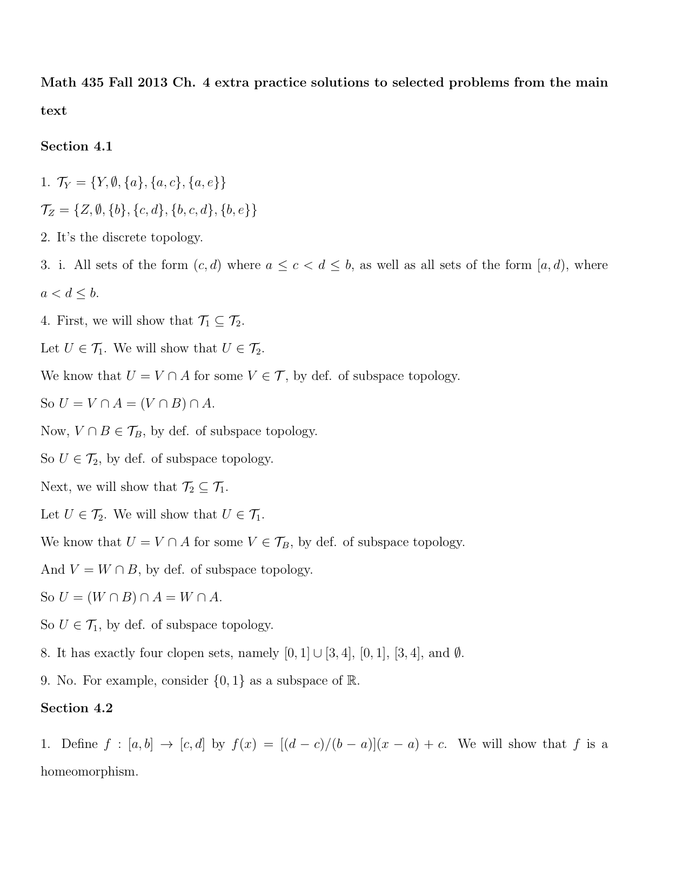
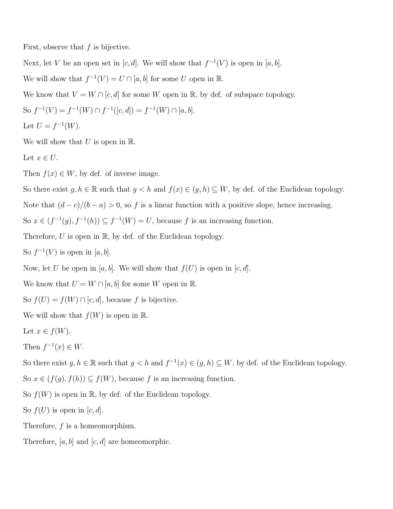
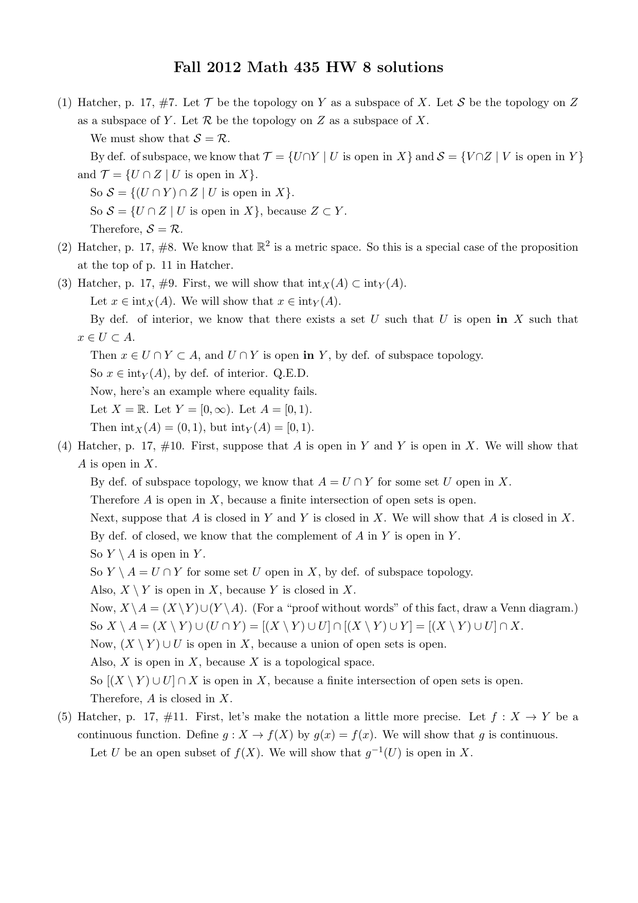

MATH 5690 (Topology) · Chapter 4 Homework
Problems first; ALL solutions together at the end. The comps problem is quoted verbatim from the CSULA topology comprehensive exam (solution by Claude - comps have no key). The assigned main-textbook problems are inlined verbatim (cropped from Morris, Topology Without Tears); official solutions are appended.
For: Quiz 3 (Wed Oct 14) · all quiz dates
Problems
Assigned problems (Chapter 4)
$\bullet$ Fall 2011 topology comps, Problem 1 (all parts).
$\bullet$ Main textbook: Section 4.1 #1-10, 15, 16(i, ii, iv); Section 4.2 #1, 2, 4, 5; Section 4.3 #4, 5, 7.
$\bullet$ Zariski question (below), and additional problems (2)-(7) (Krebs' doc numbers two of them (5)).
Comprehensive-exam problem (Fall 2011, #1) - verbatim
(a) Define what it means for two topological spaces to be homeomorphic. For parts (b), (c), and (d), a topological space will be given. First determine if it is homeomorphic to the line $\mathbb{R}$, and then either produce a homeomorphism (but don't prove that it's a homeomorphism) between that space and $\mathbb{R}$, or else explain why no such homeomorphism exists.
(b) The open interval $(0,1)=\{t\in\mathbb{R}: 0<t<1\}$.(c) The plane $\mathbb{R}^2$.(d) The circle $S=\{(x,y): x^2+y^2=1\}\subset\mathbb{R}^2$.
Zariski question (class) - verbatim
Let $X$ be $\mathbb{R}^2$ in the Zariski topology. Let $A$ be the $x$-axis. Show that the subspace topology on $A$ is the same as the finite-closed (also called cofinite) topology on $A$. [Official solution appended, listed there as (6).]
MAIN-TEXTBOOK PROBLEMS (Morris, Topology Without Tears - assigned exercises, verbatim)
Exercises 4.1
$\bullet$ #1. Let $X = \{a,b,c,d,e\}$ and $\tau = \{X, \emptyset, \{a\}, \{a,b\}, \{a,c,d\}, \{a,b,c,d\}, \{a,b,e\}\}$. List the members of the induced topologies $\tau_Y$ on $Y = \{a,c,e\}$ and $\tau_Z$ on $Z = \{b,c,d,e\}$.
$\bullet$ #2. Describe the topology induced on the set $\mathbb{N}$ of positive integers by the euclidean topology on $\mathbb{R}$.
$\bullet$ #3. Write down a basis for the usual topology on each of the following:
(i) $[a,b)$, where $a < b$;
(ii) $(a,b]$, where $a < b$;
(iii) $(-\infty, a]$;
(iv) $(-\infty, a)$;
(v) $(a, \infty)$;
(vi) $[a, \infty)$.
[Hint: see Examples 4.1.4 and 4.1.5.]
$\bullet$ #4. Let $A \subseteq B \subseteq X$ and $X$ have the topology $\tau$. Let $\tau_B$ be the subspace topology on $B$. Further let $\tau_1$ be the topology induced on $A$ by $\tau$, and $\tau_2$ be the topology induced on $A$ by $\tau_B$. Prove that $\tau_1 = \tau_2$. (So a subspace of a subspace is a subspace.)
$\bullet$ #5. Let $(Y, \tau_Y)$ be a subspace of a space $(X, \tau)$. Show that a subset $Z$ of $Y$ is closed in $(Y, \tau_Y)$ if and only if $Z = A \cap Y$, where $A$ is a closed subset of $(X, \tau)$.
$\bullet$ #6. Show that every subspace of a discrete space is discrete.
$\bullet$ #7. Show that every subspace of an indiscrete space is indiscrete.
$\bullet$ #8. Show that the subspace $[0,1] \cup [3,4]$ of $\mathbb{R}$ has at least $4$ clopen subsets. Exactly how many clopen subsets does it have?
$\bullet$ #9. Is it true that every subspace of a connected space is connected?
$\bullet$ #10. Let $(Y, \tau_Y)$ be a subspace of $(X, \tau)$. Show that $\tau_Y \subseteq \tau$ if and only if $Y \in \tau$.
[Hint: Remember $Y \in \tau_Y$.]
$\bullet$ #15. Let $a$ and $b$ be in $\mathbb{R}$ with $a < b$. Prove that $[a,b]$ is connected.
[Hint: In the statement and proof of Proposition 3.3.3 replace $\mathbb{R}$ everywhere by $[a,b]$.]
$\bullet$ #16. Let $\mathbb{Q}$ be the set of all rational numbers with the usual topology and let $\mathbb{I}$ be the set of all irrational numbers with the usual topology.
(i) Prove that neither $\mathbb{Q}$ nor $\mathbb{I}$ is a discrete space.
(ii) Is $\mathbb{Q}$ or $\mathbb{I}$ a connected space?
(iii) Is $\mathbb{Q}$ or $\mathbb{I}$ a Hausdorff space?
(iv) Does $\mathbb{Q}$ or $\mathbb{I}$ have the finite-closed topology?
Exercises 4.2
Exercises 4.3
Chapter 4: additional problems Krebs added on 9/25 and 10/4 (verbatim from his homework doc)
Solutions
My worked solutions to the comprehensive-exam problem (and any class problem with no official key) follow; the instructor's official solutions to the main-textbook / worksheet problems are appended after.
Comps Fall 2011 #1 - solution
(a) Two topological spaces $X,Y$ are homeomorphic if there exists a bijection $f:X\to Y$ such that both $f$ and its inverse $f^{-1}$ are continuous (equivalently, $f$ is a continuous open bijection).
(b) YES, $(0,1)\cong\mathbb{R}$. A homeomorphism is $f:(0,1)\to\mathbb{R}$, $f(t)=\tan(\pi t-\frac{\pi}{2})$ (strictly increasing, onto $\mathbb{R}$).
(c) NO, $\mathbb{R}^2\ncong\mathbb{R}$. Removing one point from $\mathbb{R}$ disconnects it ($\mathbb{R}\setminus\{0\}$ has two components), while removing any one point from $\mathbb{R}^2$ leaves a (path-)connected space. A homeomorphism would carry the removed point of one to a point of the other and preserve connectedness of the complement - impossible. So no homeomorphism exists.
(d) NO, $S\ncong\mathbb{R}$. The circle $S$ is compact (closed and bounded in $\mathbb{R}^2$), but $\mathbb{R}$ is not compact, and compactness is a homeomorphism invariant. (Equivalently, removing a point from $S$ leaves it connected, but not so for $\mathbb{R}$.) ∎



Chapter 4: backup solutions (Claude, not official)
Covered by the official files and not repeated here: Section 4.1 #1, #2, #3(i), #4, #8, #9; Section 4.2 #1(i), #2; Section 4.3 #4 (sketch), #5(i) (sketch) (ch4_maintext.pdf); Additional problem (1) (ch4_zariski.pdf, item (6)). The official 4.2 #5 solves an older-edition version with X1 = (0, 1) ∪ (2, 3) (map x ↦ x − 1); the current book has (3, 4), so it is redone below.
Tools used several times.
Lemma A (restriction). If f : (X, τ) → (Y, τ1) is a homeomorphism and S ⊆ X, then f restricted to S is a homeomorphism of the subspace S onto the subspace f(S).
Proof. It is a bijection S → f(S). If U is open in S, U = V ∩ S with V ∈ τ, and f(U) = f(V) ∩ f(S) (f is injective), which is open in f(S) since f(V) ∈ τ1. If W is open in f(S), W = G ∩ f(S) with G ∈ τ1, and the preimage of W in S is f−1(G) ∩ S, open in S. ∎
Lemma B (ε-δ criterion). Let A ⊆ ℝm, B ⊆ ℝk carry the subspace topologies, and let f : A → B be a bijection such that both f and f−1 are ε-δ continuous (for every p and ε > 0 there is δ > 0 with ‖q − p‖ < δ ⇒ ‖f(q) − f(p)‖ < ε). Then f is a homeomorphism.
Proof. Open balls B(p, r) are open in ℝn and form a basis (Exercises 2.2 #1, #2 and 2.3 #1(ii); the same argument works in ℝn). Hence a set U ⊆ A is open in A iff for every p ∈ U there is r > 0 with B(p, r) ∩ A ⊆ U. [If U = V ∩ A with V open, some B(p, r) ⊆ V; conversely U = (⋃p B(p, rp)) ∩ A.] Now let W be open in B and p ∈ f−1(W). Choose ε with B(f(p), ε) ∩ B ⊆ W and then δ for f at p; then B(p, δ) ∩ A ⊆ f−1(W). So f−1(W) is open in A: condition (iii) of Definition 4.2.1. Applying the same to f−1 gives that f(U) = (f−1)−1(U) is open in B for U open in A: condition (iv). ∎
Lemma M (monotone maps of intervals). If I, J ⊆ ℝ are intervals and f : I → J is a strictly monotone bijection, then f is a homeomorphism.
Proof. First let f be strictly increasing. The sets (u, v) ∩ I, u < v, form a basis of the subspace I (open intervals form a basis of ℝ). Let W = (u, v) ∩ I and y = f(x) with x ∈ W. If I ∩ (u, x) ≠ Ø pick x1 in it and put y1 = f(x1); otherwise put y1 = y − 1. Similarly, if I ∩ (x, v) ≠ Ø pick x2 in it and put y2 = f(x2); otherwise y2 = y + 1. Then y1 < y < y2. Let z ∈ (y1, y2) ∩ J, z = f(t) with t ∈ I. If t ≤ u: in the first case t < x1 gives z = f(t) < f(x1) = y1, impossible; in the second case t ≤ u < x with t, x ∈ I, so (u, x) ⊆ [t, x] ⊆ I (I is an interval), contradicting I ∩ (u, x) = Ø. So t > u, and symmetrically t < v; thus z ∈ f(W). Hence y ∈ (y1, y2) ∩ J ⊆ f(W), so f(W) is open in J. Every open set of I is a union of such W, so f maps open sets to open sets. f−1 : J → I is also a strictly increasing bijection, so it too maps open sets to open sets, i.e. preimages under f of open sets are open. If f is strictly decreasing, write f = n ∘ g where g = −f : I → −J is strictly increasing and n(y) = −y; n is a homeomorphism −J → J because it maps each basic set (u, v) ∩ (−J) onto (−v, −u) ∩ J and n−1 = n. Compose (Example 4.2.2). ∎
(i) [a, b), where a < b;
(ii) (a, b], where a < b;
(iii) (−∞, a];
(iv) (−∞, a);
(v) (a, ∞);
(vi) [a, ∞).
[Hint: see Examples 4.1.4 and 4.1.5.]
General fact. If 𝓑 is a basis for (X, τ) and Y ⊆ X, then 𝓑Y = {B ∩ Y : B ∈ 𝓑} is a basis for τY: each B ∩ Y is open in Y, and if U = V ∩ Y with V = ⋃ Bj, then U = ⋃ (Bj ∩ Y). So a basis for Y ⊆ ℝ is {(c, d) ∩ Y : c < d}, and we may drop Ø. Computing these intersections gives:
- (ii) Y = (a, b]: {(c, d) : a ≤ c < d ≤ b} ∪ {(c, b] : a ≤ c < b}.
- (iii) Y = (−∞, a]: {(c, d) : c < d ≤ a} ∪ {(c, a] : c < a}.
- (iv) Y = (−∞, a): {(c, d) : c < d ≤ a}.
- (v) Y = (a, ∞): {(c, d) : a ≤ c < d}.
- (vi) Y = [a, ∞): {(c, d) : a ≤ c < d} ∪ {[a, d) : a < d}.
Justification for (ii) (the others are identical): a non-empty (c, d) ∩ (a, b] equals (max(a, c), min(b, d)) if d ≤ b, and (max(a, c), b] if d > b, which are of the listed forms. Conversely each listed set is such an intersection: (c, d) = (c, d) ∩ (a, b] when a ≤ c < d ≤ b, and (c, b] = (c, b + 1) ∩ (a, b]. So the list is exactly the non-empty members of 𝓑Y, a basis. For (vi) note [a, d) = (a − 1, d) ∩ [a, ∞) and for (iii) (c, a] = (c, a + 1) ∩ (−∞, a]. In (iv) and (v), Y is open in ℝ, so the intersections are ordinary open intervals inside Y. ∎
(⇒) Z closed in Y means Y \ Z ∈ τY, so Y \ Z = U ∩ Y for some U ∈ τ. Let A = X \ U, closed in X. Then A ∩ Y = Y \ U = Y \ (U ∩ Y) = Y \ (Y \ Z) = Z.
(⇐) If Z = A ∩ Y with A closed in X, then U = X \ A ∈ τ and Y \ Z = Y \ A = U ∩ Y ∈ τY. So Z is closed in Y. ∎
Let (X, τ) be discrete and Y ⊆ X. For any S ⊆ Y, S ⊆ X so S ∈ τ, and S = S ∩ Y ∈ τY. So every subset of Y is open in Y: τY is discrete. ∎
τ = {X, Ø}, so τY = {X ∩ Y, Ø ∩ Y} = {Y, Ø}, the indiscrete topology on Y. ∎
[Hint: Remember Y ∈ τY.]
(⇒) Y = X ∩ Y ∈ τY ⊆ τ.
(⇐) Let W ∈ τY; W = U ∩ Y with U ∈ τ. Since U, Y ∈ τ, their intersection W ∈ τ. So τY ⊆ τ. ∎
[Hint: In the statement and proof of Proposition 3.3.3 replace ℝ everywhere by [a, b].]
Suppose S is a clopen subset of [a, b] with S ≠ Ø and S ≠ [a, b]. Then [a, b] \ S is also clopen, non-empty and proper. Pick x ∈ S and y ∈ [a, b] \ S; interchanging S and its complement if necessary, we may assume x < y. Let Z = S ∩ [x, y], which is non-empty (x ∈ Z) and bounded above by y; let z = sup Z. Then x ≤ z ≤ y, so z ∈ [a, b].
z ∈ S. If not, z lies in the open set [a, b] \ S of [a, b], so there is ε > 0 with (z − ε, z + ε) ∩ [a, b] ⊆ [a, b] \ S. As z = sup Z there is w ∈ Z with z − ε < w ≤ z; w ∈ [a, b], so w ∉ S, contradicting w ∈ Z ⊆ S.
Contradiction. Since y ∉ S, z ≠ y, so z < y. S is open in [a, b], so there is ε > 0 with (z − ε, z + ε) ∩ [a, b] ⊆ S. Choose t with z < t < min(z + ε, y). Then a ≤ x ≤ z < t < y ≤ b, so t ∈ [a, b] ∩ (z − ε, z + ε) ⊆ S, and t ∈ [x, y]; thus t ∈ Z with t > z = sup Z. Contradiction. Hence [a, b] has no proper non-empty clopen subset: it is connected. ∎
(i) Prove that neither ℚ nor 𝕀 is a discrete space.
(ii) Is ℚ or 𝕀 a connected space?
(iv) Does ℚ or 𝕀 have the finite-closed topology?
(i) If {0} were open in ℚ, then {0} = U ∩ ℚ with U open in ℝ, so (−ε, ε) ⊆ U for some ε > 0. Choose n ∈ ℕ with 1/n < ε; then 1/n ∈ U ∩ ℚ = {0}, contradiction. So ℚ is not discrete. Similarly if {√2} = U ∩ 𝕀 with (√2 − ε, √2 + ε) ⊆ U, choose n ∈ ℕ with √2/n < ε; then √2(1 + 1/n) is irrational (a nonzero rational times √2), lies in (√2 − ε, √2 + ε) ∩ 𝕀, and differs from √2. Contradiction; 𝕀 is not discrete.
(ii) Neither is connected. In ℚ: A = ℚ ∩ (−∞, √2) and B = ℚ ∩ (√2, ∞) are open in ℚ, disjoint, non-empty (0 ∈ A, 2 ∈ B), and A ∪ B = ℚ since √2 ∉ ℚ. So A = ℚ \ B is clopen, proper and non-empty. In 𝕀: A = 𝕀 ∩ (−∞, 0) and B = 𝕀 ∩ (0, ∞) are open, disjoint, non-empty (−√2 ∈ A, √2 ∈ B), and cover 𝕀 since 0 ∉ 𝕀. So A is a proper non-empty clopen subset.
(iv) Neither has the finite-closed topology. In the finite-closed topology every non-empty open set has finite complement. But the sets A in (ii) are non-empty and open, while their complements B are infinite (B ∩ ℚ contains 2, 3, 4, …; B ∩ 𝕀 contains n√2 for all n ∈ ℕ). ∎
(iii) If c, d, e, and f are any real numbers with c < d and e < f, prove that [c, d) ≅ [e, f) ≅ (c, d] ≅ (e, f].
(iv) Deduce that for any real numbers a and b with a < b, [0, 1) ≅ (−∞, a] ≅ [a, ∞) ≅ [a, b) ≅ (a, b].
All maps below are strictly monotone bijections between intervals, hence homeomorphisms by Lemma M; ≅ is an equivalence relation (Remark 4.2.3).
(ii) x ↦ x + (b − a) is an increasing bijection (−∞, a] → (−∞, b]. x ↦ a + b − x is a decreasing bijection (−∞, b] → [a, ∞) (it sends x ≤ b to a + b − x ≥ a, with inverse y ↦ a + b − y). x ↦ x + (b − a) is an increasing bijection [a, ∞) → [b, ∞).
(iii) x ↦ e + (f − e)(x − c)/(d − c) is an increasing bijection [c, d) → [e, f). x ↦ c + (d − c)(f − x)/(f − e) is a decreasing bijection [e, f) → (c, d] (e ↦ d, and x → f gives values → c, with c not attained). x ↦ e + (f − e)(x − c)/(d − c) is an increasing bijection (c, d] → (e, f].
(iv) By (iii), [0, 1) ≅ [a, b) ≅ (a, b]. The map x ↦ x/(1 − x) is a strictly increasing bijection [0, 1) → [0, ∞) (inverse y ↦ y/(1 + y); increasing because x/(1 − x) = 1/(1 − x) − 1), so [0, 1) ≅ [0, ∞), and by (ii) [0, ∞) ≅ [a, ∞) ≅ (−∞, a]. ∎
(ii) Let D1 and D2 be the closed discs in ℝ2 given by D1 = {⟨x, y⟩ : x2 + y2 ⩽ c1} and D2 = {⟨x, y⟩ : x2 + y2 ⩽ c2} where c1 and c2 are positive real numbers. Prove that the topological space D1 ≅ D2, where D1 and D2 have their subspace topologies.
(iii) Prove that X1 ≅ D1.
(i) Let α = a2/a1, β = b2/b1 and f(x, y) = (αx, βy). Then |x| ≤ a1 ⇔ |αx| ≤ a2 and |y| ≤ b1 ⇔ |βy| ≤ b2, so f is a bijection X1 → X2 with inverse (u, v) ↦ (u/α, v/β). Both satisfy ‖f(p) − f(q)‖ ≤ L‖p − q‖ (L = max(α, β), resp. max(1/α, 1/β)), so both are ε-δ continuous (δ = ε/L). By Lemma B, X1 ≅ X2.
(ii) Let k = √(c2/c1) and g(p) = kp. Since ‖kp‖2 = k2‖p‖2, ‖p‖2 ≤ c1 ⇔ ‖kp‖2 ≤ c2, so g is a bijection D1 → D2 with inverse p ↦ p/k; ‖g(p) − g(q)‖ = k‖p − q‖. By Lemma B, D1 ≅ D2.
(iii) By (i), X1 ≅ Q = [−1, 1] × [−1, 1] (take a2 = b2 = 1), and by (ii), D1 ≅ D = {‖p‖ ≤ 1} (take c2 = 1). By transitivity it suffices to show Q ≅ D. Write ‖p‖∞ = max(|p1|, |p2|); then Q = {‖p‖∞ ≤ 1} and ‖p‖∞ ≤ ‖p‖ ≤ √2‖p‖∞. Define
h(p) = (‖p‖∞/‖p‖) p for p ≠ 0, h(0) = 0; k(q) = (‖q‖/‖q‖∞) q for q ≠ 0, k(0) = 0.
(h pushes each square ‖p‖∞ = t radially onto the circle ‖q‖ = t.) Facts: h(p) is a positive multiple of p, with ‖h(p)‖ = ‖p‖∞; and ‖h(p)‖∞ = (‖p‖∞/‖p‖)‖p‖∞. Hence for p ≠ 0, with q = h(p): ‖q‖/‖q‖∞ = ‖p‖/‖p‖∞, so k(q) = (‖p‖/‖p‖∞)(‖p‖∞/‖p‖)p = p. Symmetrically h(k(q)) = q. So h and k are mutually inverse bijections of ℝ2. Also ‖h(p)‖ = ‖p‖∞, so h(Q) ⊆ D, and ‖k(q)‖∞ = ‖q‖ (same computation), so k(D) ⊆ Q; hence h restricts to a bijection Q → D with inverse k.
Continuity. Away from 0, h and k are built from the functions ‖·‖ and ‖·‖∞ (each satisfies |N(p) − N(q)| ≤ N(p − q) ≤ √2‖p − q‖, so is continuous), by quotients with non-vanishing denominators and multiplication by the coordinates, so they are ε-δ continuous at every p ≠ 0 by the usual limit laws. At 0: ‖h(p) − h(0)‖ = ‖p‖∞ ≤ ‖p‖, and ‖k(q) − k(0)‖ = ‖q‖2/‖q‖∞ ≤ √2‖q‖; take δ = ε, resp. δ = ε/√2. By Lemma B, h : Q → D is a homeomorphism. Hence X1 ≅ Q ≅ D ≅ D1. ∎
Yes. Define f : X1 → X2 by f(x) = x for x ∈ (0, 1) and f(x) = x − 2 for x ∈ (3, 4). f maps (0, 1) onto (0, 1) and (3, 4) onto (1, 2), so it is a bijection; f−1(y) = y on (0, 1), y + 2 on (1, 2).
X1 and X2 are open in ℝ, so by Exercise 4.1 #10 (and since V ∩ Xi is open in ℝ for V open) the open sets of Xi are exactly the open subsets of ℝ contained in Xi. Let U be open in X1. Then U ∩ (0, 1) and U ∩ (3, 4) are open in ℝ, and f(U) = (U ∩ (0, 1)) ∪ ((U ∩ (3, 4)) − 2), where a translate of an open set is open (it is a union of translated open intervals). So f(U) is open in ℝ and contained in X2, hence open in X2. The same argument with f−1 (translation by +2 on (1, 2)) shows f−1(W) is open in X1 for W open in X2. So f is a homeomorphism. ∎
Show that
(i) Z is not homeomorphic to any interval, and
(ii) Z is not homeomorphic to X or Y, the spaces described in Exercises 3 and Exercise 4 above.
Notation: C1 = {x2 + y2 = 1}, C2 = {(x − 3/2)2 + y2 = 1}, so Z = C1 ∪ C2. Subtracting the equations gives 3x − 9/4 = 0, so C1 ∩ C2 = {P, P′} with P = ⟨3/4, √7/4⟩, P′ = ⟨3/4, −√7/4⟩. X = C1 is the circle of Exercise 3; Y = C1 ∪ {(x − 2)2 + y2 = 1} is Exercise 4.
Facts used. (F1) A circle minus one point is homeomorphic to (0, 1) (Exercise 4.3 #3(i) for the point ⟨1, 0⟩; for another point first rotate, a rotation being a homeomorphism of the circle by Lemma B since it preserves distances), hence connected. (F2) If A, B are connected subspaces with A ∩ B ≠ Ø, A ∪ B is connected (Exercise 4.1 #11: if S is clopen in A ∪ B, S ∩ A is clopen in A so is Ø or A, likewise S ∩ B; a common point forces both to be Ø or both to be everything). (F3) Connectedness is preserved by homeomorphisms (Proposition 4.3.2), and a homeomorphism restricts to homeomorphisms of subspaces (Lemma A).
Claim 1: Z \ {z} is connected for every z ∈ Z. Say z ∈ C1 (the other case is symmetric). If z ∉ C2, Z \ {z} = (C1 \ {z}) ∪ C2, both connected, meeting in {P, P′}. If z = P (or P′), Z \ {z} = (C1 \ {P}) ∪ (C2 \ {P}), both connected by (F1), meeting at P′. Apply (F2).
Z ≇ Y. Y \ {⟨1, 0⟩} is disconnected: its points on the first circle have x < 1 and those on the second circle have x > 1, so (Y \ {⟨1, 0⟩}) ∩ {x < 1} is a non-empty proper subset that is open, with open complement (Y \ {⟨1, 0⟩}) ∩ {x > 1}. If f : Z → Y were a homeomorphism, with z = f−1(⟨1, 0⟩), then f would restrict to a homeomorphism of Z \ {z} (connected, Claim 1) onto Y \ {⟨1, 0⟩} (disconnected), contradicting (F3).
Claim 2: X \ {a, b} is disconnected for all distinct a, b ∈ X. By (F1) there is a homeomorphism g : X \ {a} → (0, 1); let c = g(b). By Lemma A, X \ {a, b} ≅ (0, 1) \ {c}, which is disconnected ((0, c) is a proper non-empty clopen subset of it).
Claim 3: there are distinct a, b ∈ Z with Z \ {a, b} connected. Take a = ⟨−1, 0⟩ ∈ C1 \ C2 and b = ⟨5/2, 0⟩ ∈ C2 \ C1. Then Z \ {a, b} = (C1 \ {a}) ∪ (C2 \ {b}), both connected by (F1), meeting at P. By (F2) it is connected.
Z ≇ X. If f : Z → X were a homeomorphism, with a, b as in Claim 3, then f would restrict to a homeomorphism Z \ {a, b} → X \ {f(a), f(b)}, connected onto disconnected (Claim 2). Contradiction with (F3). ∎
(For (i), covered officially: every interval with more than one point has a point whose removal disconnects it, while Z has none by Claim 1; and Z is not a single point.)
(ii)* In Exercises 1.1 #5, is (X, τ1) ≅ (X, τ2)?
(iii)* In Exercises 1.1 # 9, is (X, τ2) ≅ (X, τ9)?
Recall: 1.1 #5 (i) τ1 = {ℝ, Ø} ∪ {(−n, n) : n ∈ ℕ}; 1.1 #5 (ii) τ2 = {ℝ, Ø} ∪ {[−n, n] : n ∈ ℕ}; 1.1 #9 (ii) σ2 = {ℝ, Ø} ∪ {(−r, r) : r > 0}; 1.1 #9 (ix) σ9 = {ℝ, Ø} ∪ {[−r, r], (−r, r) : r > 0}.
Key remark. If f : (X, τ) → (Y, τ′) is a homeomorphism then V ↦ f(V) is a bijection τ → τ′ (inverse W ↦ f−1(W)), and since f is a bijection, V ⊆ V′ ⇔ f(V) ⊆ f(V′). Also f(Ø) = Ø and f(X) = Y.
(i) Not homeomorphic. τ1 is countable. σ2 is uncountable: the sets (−r, r), r > 0, are pairwise distinct. A homeomorphism would give a bijection between them. ∎
(ii) Yes, (ℝ, τ1) ≅ (ℝ, τ2). Split ℝ into "layers" L1 = (−1, 1), Ln = (−n, −(n−1)] ∪ [n−1, n) for n ≥ 2, and L′1 = [−1, 1], L′n = [−n, −(n−1)) ∪ (n−1, n] for n ≥ 2. Then (−n, n) = L1 ∪ ⋯ ∪ Ln, [−n, n] = L′1 ∪ ⋯ ∪ L′n, and each family partitions ℝ. Define f : ℝ → ℝ:
- on L1: f(±1/m) = ±1/(m − 1) for integers m ≥ 2, and f(x) = x for every other x ∈ (−1, 1). This is a bijection (−1, 1) → [−1, 1]: the points ±1/m (m ≥ 2) are sent bijectively onto ±1/k (k ≥ 1), which now include ±1, and all other points are fixed.
- on Ln, n ≥ 2: f(x) = −(2n − 1) − x for x ∈ (−n, −(n−1)], and f(x) = (2n − 1) − x for x ∈ [n−1, n). These reflections map (−n, −(n−1)] onto [−n, −(n−1)) and [n−1, n) onto (n−1, n], i.e. Ln bijectively onto L′n.
So f is a bijection ℝ → ℝ with f(Ln) = L′n for all n. Hence f(Ø) = Ø, f(ℝ) = ℝ, f((−n, n)) = [−n, n], so f maps τ1 onto τ2, and f−1([−n, n]) = (−n, n), so preimages of τ2-open sets are τ1-open. f is a homeomorphism. ∎
(iii) No, (ℝ, σ2) ≇ (ℝ, σ9). In σ9, the sets (−1, 1) ⊊ [−1, 1] have no member of σ9 strictly between them (a member V with (−1, 1) ⊆ V ⊆ [−1, 1] is neither Ø nor ℝ, so it is (−r, r) or [−r, r]; the inclusions force r = 1, so V is (−1, 1) or [−1, 1]). Suppose f : (ℝ, σ2) → (ℝ, σ9) were a homeomorphism. Then A = f−1((−1, 1)) and B = f−1([−1, 1]) are in σ2, A ⊊ B, and neither is Ø or ℝ (as f(Ø) = Ø, f(ℝ) = ℝ). So A = (−r, r), B = (−s, s) with r < s. Then C = (−(r+s)/2, (r+s)/2) ∈ σ2 satisfies A ⊊ C ⊊ B, so f(C) ∈ σ9 satisfies (−1, 1) ⊊ f(C) ⊊ [−1, 1], which is impossible. ∎
(Zariski topology on ℝm: the closed sets are Z(S) = {p : f(p) = 0 ∀ f ∈ S}, S a set of polynomials in m variables. If the topology is instead defined by the basis Uf = {p : f(p) ≠ 0}, as in class, the two agree: the complement of an open set ⋃α Ufα is Z({fα}), and conversely the complement of Z(S) is ⋃f ∈ S Uf. Take n ≥ 2.) Give A the subspace topology; by Exercise 4.1 #5 its closed sets are the sets F ∩ A with F Zariski-closed in ℝn. Define φ : ℝn−1 → A, φ(a) = (a, 0). It is a bijection (inverse: drop the last coordinate).
Because φ is a bijection, φ(ℝn−1 \ E) = A \ φ(E) and φ−1(A \ G) = ℝn−1 \ φ−1(G); so φ is a homeomorphism iff φ maps closed sets to closed sets and φ−1 of closed sets are closed. We check both.
Preimages of closed sets are closed. A closed set of A is Z(S) ∩ A. For f ∈ S let f̄(x1, …, xn−1) = f(x1, …, xn−1, 0), a polynomial in n − 1 variables, and S̄ = {f̄ : f ∈ S}. Then a ∈ φ−1(Z(S) ∩ A) ⇔ f(a, 0) = 0 ∀ f ∈ S ⇔ a ∈ Z(S̄). So φ−1(Z(S) ∩ A) = Z(S̄) is closed in ℝn−1.
Images of closed sets are closed. Let E = Z(T) ⊆ ℝn−1, T a set of polynomials in x1, …, xn−1. Regard each g ∈ T as a polynomial ĝ in n variables not involving xn, and let T̂ = {ĝ}. Then (a, t) ∈ Z(T̂) ⇔ a ∈ Z(T), so Z(T̂) ∩ A = {(a, 0) : a ∈ Z(T)} = φ(E), which is closed in A.
Hence φ is a homeomorphism and A ≅ ℝn−1 (Zariski). For n = 2 this recovers problem (1), since the Zariski topology on ℝ is the finite-closed topology (a nonzero one-variable polynomial has finitely many roots, and a finite set {r1, …, rk} is Z((x − r1)⋯(x − rk))). ∎
(Irreducible: non-empty, and not the union of two proper closed subsets.) Let f : X → Y be a homeomorphism. Y ≠ Ø since X ≠ Ø. Suppose Y = A ∪ B with A, B closed in Y and A ≠ Y ≠ B. Then f−1(A) is closed in X, because X \ f−1(A) = f−1(Y \ A) is open (condition (iii) of Definition 4.2.1); likewise f−1(B). Also X = f−1(Y) = f−1(A) ∪ f−1(B). And f−1(A) ≠ X: since f is onto, f(f−1(A)) = A ≠ Y = f(X). Likewise f−1(B) ≠ X. So X is a union of two proper closed subsets, contradicting irreducibility of X. Hence Y is irreducible. ∎ (Only continuity and surjectivity of f were used: a continuous image of an irreducible space is irreducible.)
By Exercise 4.1 #5 the closed sets of A are the sets Z(S) ∩ A, and the closed sets of B are the sets Z(S) ∩ B, where S is any set of polynomials in x, y, z. Define ψ : A → B, ψ(x, y, 0) = (x, y, x2 + y2). It is a bijection with inverse (x, y, z) ↦ (x, y, 0). As in problem (2), since ψ is a bijection, it suffices to show that ψ−1 of each closed set of B is closed in A and that ψ of each closed set of A is closed in B (images and preimages of complements are complements).
Preimages of closed sets are closed. Let F = Z(S) ∩ B. For f ∈ S let f′(x, y, z) = f(x, y, x2 + y2). This is a polynomial in x, y, z that does not involve z. Let S′ = {f′ : f ∈ S}. Then (x, y, 0) ∈ ψ−1(F) ⇔ f(x, y, x2 + y2) = 0 for all f ∈ S ⇔ f′(x, y, 0) = 0 for all f ∈ S ⇔ (x, y, 0) ∈ Z(S′). So ψ−1(F) = Z(S′) ∩ A, which is closed in A.
Images of closed sets are closed. Let E = Z(T) ∩ A. For g ∈ T let g*(x, y, z) = g(x, y, 0). This is a polynomial that does not involve z. Let T* = {g* : g ∈ T}. A point (x, y, x2 + y2) of B is in Z(T*) ⇔ g(x, y, 0) = 0 for all g ∈ T ⇔ (x, y, 0) ∈ E ⇔ (x, y, x2 + y2) ∈ ψ(E). So ψ(E) = Z(T*) ∩ B, which is closed in B.
Hence ψ is a homeomorphism, so A ≅ B. ∎ (Combined with problem (2), both are homeomorphic to ℝ2 in the Zariski topology.)
Choice: the letters I and T, with
I = {(x, 0) : 0 ≤ x ≤ 1} (a segment), T = H ∪ V, where H = {(x, 1) : −1 ≤ x ≤ 1} (the bar) and V = {(0, y) : 0 ≤ y ≤ 1} (the stem).
Answer: I and T are not homeomorphic.
Invariant. Call a space 3-splittable if it is the union of three nonempty, pairwise disjoint open subsets. If f : P → Q is a homeomorphism and P = U1 ∪ U2 ∪ U3 is such a splitting, then Q = f(U1) ∪ f(U2) ∪ f(U3) is one too, since f is a bijection and maps open sets to open sets. So being 3-splittable is preserved by homeomorphisms.
T minus its junction point is 3-splittable. Let c = (0, 1) and T′ = T \ {c}. Put U1 = T′ ∩ {x < 0}, U2 = T′ ∩ {x > 0}, U3 = T′ ∩ {y < 1}. The open half-planes are open in ℝ2 (each point has a small disk inside), so each Ui is open in T′. Concretely, U1 = [−1, 0) × {1}, U2 = (0, 1] × {1}, and U3 = {0} × [0, 1). These are nonempty and pairwise disjoint, and their union is T′, because every point of T′ is either on the bar with x ≠ 0 or on the stem with y < 1.
No I minus a point is 3-splittable. The map (x, 0) ↦ x is a homeomorphism I → [0, 1] (it and its inverse preserve distances; use Lemma B). Let q ∈ I. By Lemma A, I \ {q} ≅ [0, 1] \ {t} for some t ∈ [0, 1]. Now [0, 1] \ {t} = J1 ∪ J2 with J1 = [0, t) and J2 = (t, 1]. These are intervals, possibly empty, and intervals are connected (Section 4.3). Suppose [0, 1] \ {t} = U1 ∪ U2 ∪ U3 is a 3-splitting. Each Ui is open, and its complement (the union of the other two) is open too, so Ui ∩ Jk is clopen in Jk. Since Jk is connected, Ui ∩ Jk is either Ø or Jk. A nonempty Ui meets some Jk, so it contains that whole Jk. The Ui are pairwise disjoint, so different Ui contain different Jk. There are at most two Jk, so at most two of the Ui are nonempty, a contradiction. So I \ {q} is not 3-splittable, for every q.
Conclusion. Suppose f : T → I were a homeomorphism. By Lemma A, f would restrict to a homeomorphism T′ = T \ {c} → I \ {f(c)}. The first space is 3-splittable and the second is not, which contradicts the invariance shown above. Hence I ≇ T. ∎
No. We show that in Y any two nonempty open sets intersect, while X has two disjoint nonempty open sets. A homeomorphism maps open sets to open sets and, being a bijection, maps disjoint nonempty sets to disjoint nonempty sets, so this property is preserved and X ≇ Y.
In X. The open disks D1 = {(x − 0)2 + y2 < 1} and D2 = {(x − 3)2 + y2 < 1} are basic open sets. They are nonempty and disjoint, since a common point would be within distance 1 of both (0, 0) and (3, 0), and that is impossible because those points are distance 3 apart.
Lemma P. A nonzero polynomial h ∈ ℝ[x, y] is nonzero at some point of ℝ2.
Proof. Write h = Σk ak(x) yk with some am ≠ 0 as a polynomial. A nonzero one-variable polynomial has finitely many roots, so there is an x0 with am(x0) ≠ 0. Then h(x0, y) is a nonzero polynomial in y, so it has finitely many roots, and there is a y0 with h(x0, y0) ≠ 0. ∎
In Y. Let U1 = ℝ2 \ Z(S1) and U2 = ℝ2 \ Z(S2) be nonempty Zariski-open sets. Pick p1 ∈ U1. Then p1 ∉ Z(S1), so some f ∈ S1 has f(p1) ≠ 0; in particular f is a nonzero polynomial. Likewise some g ∈ S2 is a nonzero polynomial. The product fg is a nonzero polynomial: its leading term (in total degree, then in powers of x) is the product of the leading terms of f and g, which is nonzero. By Lemma P there is a point p with f(p)g(p) ≠ 0. Then f(p) ≠ 0, so p ∉ Z(S1), i.e. p ∈ U1; likewise p ∈ U2. So U1 ∩ U2 ≠ Ø.
Now suppose h : X → Y were a homeomorphism. Then h(D1) and h(D2) would be nonempty open sets of Y, and they would be disjoint because h is injective. This contradicts the result for Y. Hence X ≇ Y. ∎ (Equivalently: X is Hausdorff and Y is not; or Y is irreducible and X is not, which links to problem (3).)
Pick p ∈ U. We show that {p}, which is open in the discrete topology, is not open in the subspace topology. Suppose it were. Then {p} = V ∩ U for some V open in ℝ. Since U is also open in ℝ, {p} = V ∩ U is open in ℝ. But every open set of ℝ that contains p contains an interval (p − ε, p + ε) with ε > 0, and so it contains p + ε/2 ≠ p. This is a contradiction. So {p} is not open in U, and the subspace topology on U is not discrete. ∎ (Note that U ≠ Ø is needed: on Ø the two topologies coincide.)
Take q = 0 ∈ ℚ (any rational works). We show {q} is not open in the subspace ℚ. Suppose {q} = V ∩ ℚ with V open in ℝ. Since q ∈ V, there is ε > 0 with (q − ε, q + ε) ⊆ V. Choose an integer n > 1/ε. Then q + 1/n is rational, lies in (q − ε, q + ε) ⊆ V, and is not q. So q + 1/n ∈ V ∩ ℚ = {q}, a contradiction. Hence {q} is open in the discrete topology on ℚ but not in the subspace topology, so the two topologies differ. ∎ (Here, unlike in (6), ℚ is not open in ℝ, so the nonempty open sets of the subspace ℚ are not open in ℝ. The proof only needs density: every interval around q contains other rationals.)